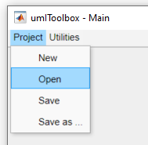
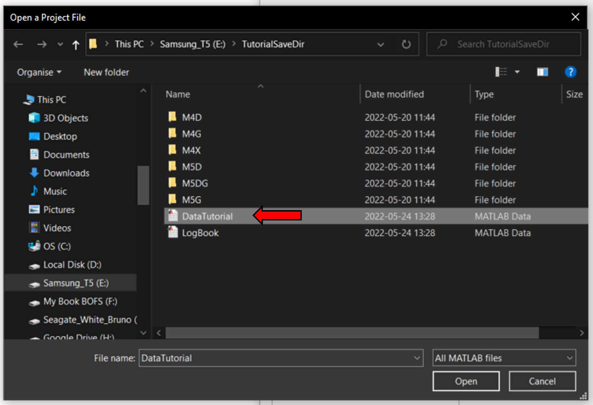
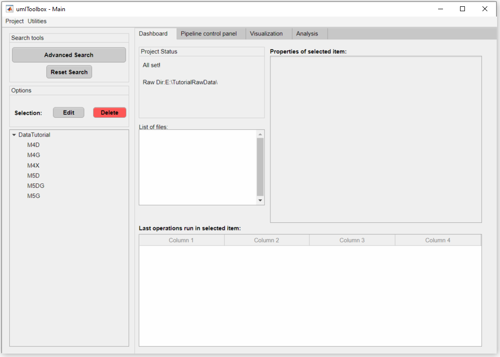
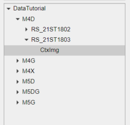
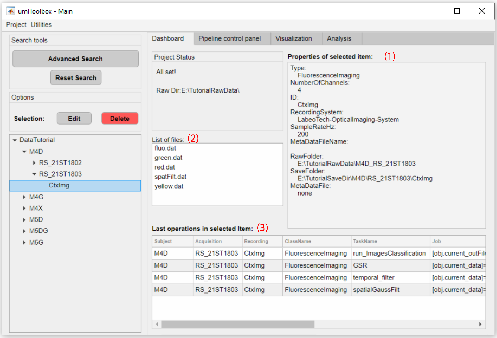
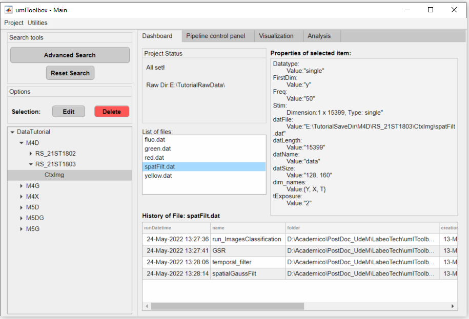
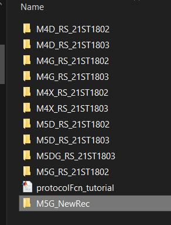
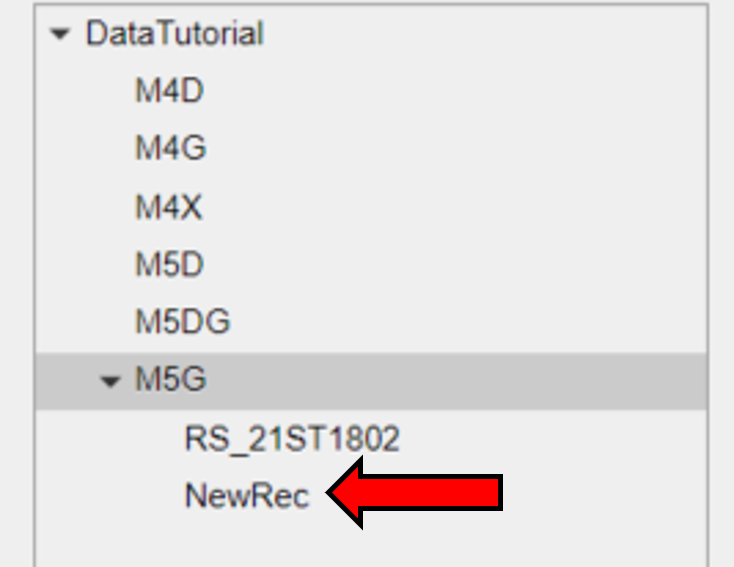
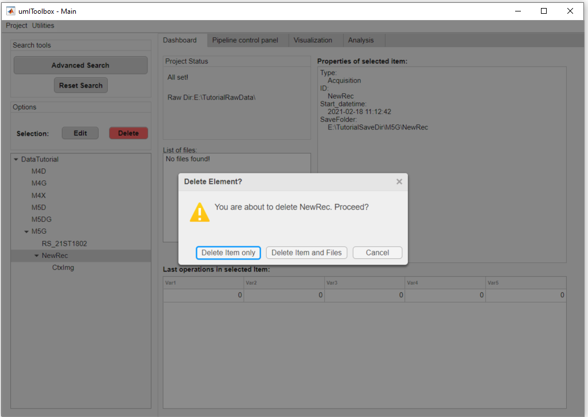
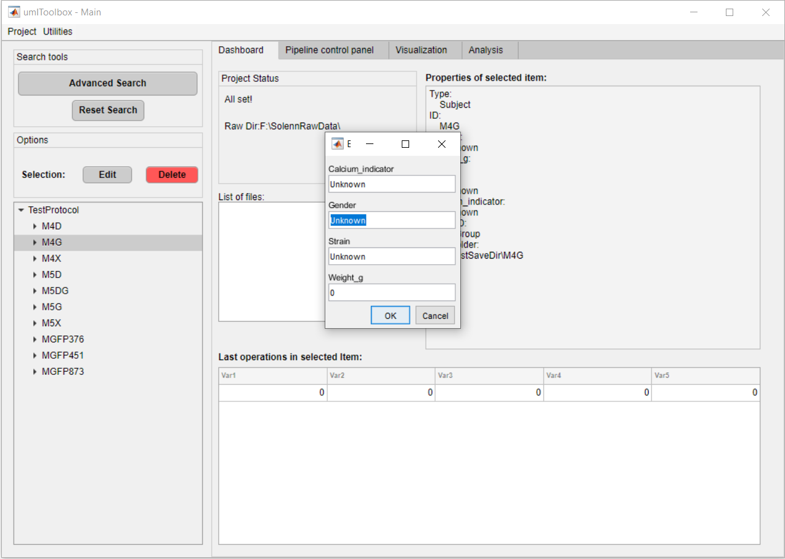

In this section, we show how to explore and manage the project data. In this context, the project data refers to all the information about the subjects (e.g. mice), recordings of a given project.
First, open the main GUI by typing Matlab's command window:
umIToolbox;
On the main menu, select Project >> Open:
Select the .mat project file to load on the app:
The project is loaded:
All the information regarding the project items (i.e subjects, acquisitions, modalities) and files created inside umIT are accessible in the Dashboard tab. The project items are listed in the tree located in the bottom left of the GUI. Select an item from the tree to show it's information:
The item's properties are displayed on the panel in the top right of the GUI (1). Any files created are listed in the List of files panel (2) as well as the last operations performed in the item are displayed in the table (3) at the bottom-right corner of the GUI:
Click on an item from the List of files to display its properties on the top-right panel as well as the History of file (i.e, the operations that gave rise to the file) in the table at the bottom-right:
Here, we show how to update your project file. A project file needs to be updated when subjects/acquisitions are added to or deleted from the main folder. For example, a new acquisition (NewRec) was added to the main folderduring the project:
First, in the main GUI go to Utilities >> Project >> Look for new data. The app will scan the main folder for new elements and a summary is displayed in the Project status panel showing the new/missing elements:

At this point, no changes are applied to the project file. To add the new acquisition to the project, go to Utilities >> Project >> Update project. The project item's tree is reloaded with the new element and the changes are applied automatically to the project's .mat file.
In the Dashboard tab, you can delete elements from the tree by clicking on the delete button in the optionsl panel. You have the option to delete the element only or the element and the files created. Here, we will delete the acquisition NewRec from the mouse M5G:
Important
The toolbox does not delete any raw data! Only files created by the toolbox can be deleted through the main GUI.
When deleting an element from the project file, the path to the raw data associated is added to a list (garbage list) and is ignored next time the project is updated. This is particularly advantageous when the main folder containing the raw data is shared by different Users.
In order to recover a deleted item, go to Utilities >> Project >> Restore garbage list. All deleted elements will be put back to the project's tree with the condition that the elements' raw data are located in the main folder.
Some of the propeties of an element can be edited by clicking on the Edit button in the options panel.
Here is an example of the editable properties of a subject:
Note
It is always faster to set as many properties as possible during the object’s creation inside the protocol function and leave the rest to be set manually in the Dashboard tab!